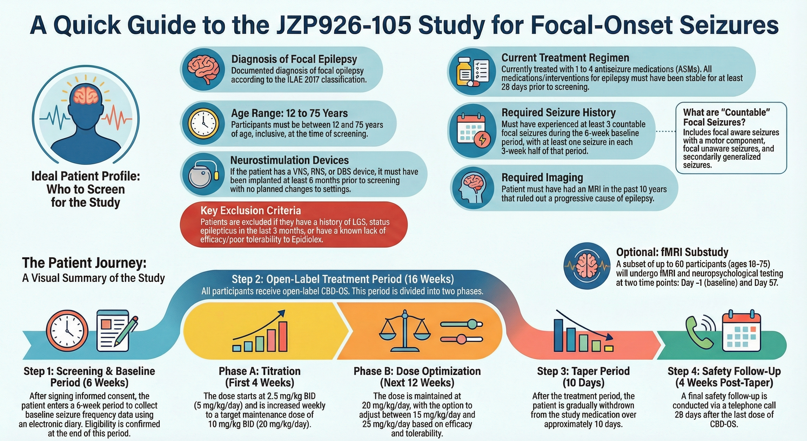
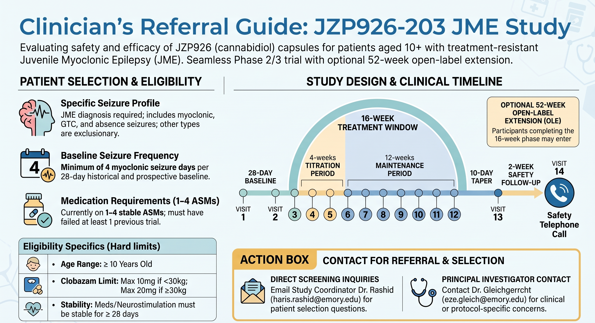

Research · Trials & Projects
Clinical Trials and Projects
Who to consider, what participation involves, and whom to contact.
Contact Zeke
Zeke Gleichgerrcht · eze.gleich@emory.edu
For trial interest, potential candidates, and clinical or protocol questions.
Ongoing — per local email · JZP926-105
EpiFOS: cannabidiol oral solution for focal epilepsy
- Who to consider: focal epilepsy, ages 12–75. The supplied flyer specifies at least 3 countable focal seizures during the 6-week baseline, with at least 1 in each 3-week half.
- Design: open-label; all participants receive study drug, with no placebo. Six-week baseline, 16-week treatment, taper, and safety follow-up. The email reports 7 in-person visits including baseline.
- Initial screening: 1–4 ASMs; the email excludes rescue medications from the count. Willingness to abstain from marijuana; no Xcopri initiation within 4 months. A neurostimulation device must have been implanted at least 6 months earlier; the email specifies no changes in the preceding month, and the flyer specifies no planned setting changes.
- Additional flyer criteria: stable epilepsy treatments for at least 28 days; MRI within 10 years ruling out a progressive cause. Listed exclusions include LGS, status epilepticus within 3 months, and known lack of efficacy or poor tolerability with Epidiolex.
- Participant support: the email reports up to $800 for participants and up to $650 for qualifying caregivers’ time, plus transportation/accommodation support as needed. Confirm terms with the team.
Sources: supplied email and EpiFOS flyer. Registry reference: NCT07233239. This is a screening summary, not the full protocol.
View EpiFOS source flyer

Starting now — per local email · JZP926-203
EpiJME: cannabidiol capsules for JME myoclonic seizures
- Who to consider: JME with uncontrolled myoclonic jerks; the flyer specifies age 10 or older and at least 4 myoclonic seizure days per 28 days in both historical and prospective baseline.
- Design: randomized 1:1, placebo-controlled; 28-day baseline followed by 16 weeks of treatment. Generalized tonic-clonic and absence seizures are tracked, but myoclonic seizure days drive eligibility and the primary endpoint, per the email.
- Initial screening: 1–4 stable ASMs, excluding rescue medications per the email; willingness to abstain from marijuana. No device implantation within 6 months and no changes in the preceding month.
- Additional flyer criteria: at least one prior failed treatment trial; medication/neurostimulation stability for at least 28 days. The flyer lists clobazam limits of 10 mg if under 30 kg and 20 mg if 30 kg or more; the dosing interval is not stated, so confirm with the study team.
- Timeline: the flyer describes 4-week titration and 12-week maintenance, followed by a 10-day taper and 2-week safety follow-up, with an optional 52-week open-label extension.
Screening contact listed on flyer: Dr. Haris Rashid · haris.rashid@emory.edu. Contact Zeke for clinical or protocol-specific concerns.
Sources: supplied email and EpiJME flyer. Registry reference: NCT07723963. The public search result reviewed still listed “not yet recruiting”; confirm Emory’s current opening status with Zeke.
View EpiJME source flyer

Starting soon — per local email
Bluewing: zorevunersen for adults with Dravet syndrome
Zeke’s email describes an upcoming adult Dravet study of zorevunersen, an investigational RNA-targeting antisense therapy. Use this terminology rather than implying gene replacement.
- Who to flag: adults with Dravet syndrome who, with their families, would like to hear about the study—even if they have not decided whether to participate.
- Reported design: the email describes no placebo and intrathecal administration, with 10 administrations over 3 years. The Bluewing protocol and schedule were not independently confirmed; verify with Zeke.
- Study interest: the email highlights developmental outcomes as well as seizures. These are research aims, not established benefits. Final seizure-frequency and other eligibility criteria remain to be confirmed.
Local study details: supplied email only. Background: Stoke Therapeutics pipeline. No Bluewing-specific public record was identified in the bounded source check.
Possible future studies · Interest only
KCNT1 & CDKL5 watchlist
Zeke asks clinicians to flag patients with KCNT1- or CDKL5-related conditions for potential future opportunities. No named protocol, eligibility criteria, or confirmed opening date was supplied. Contact Zeke to discuss possible candidates.